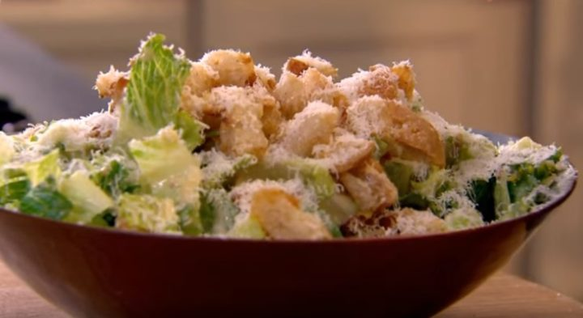

Салат «Цезарь»
Ингредиенты:
- курица филе — 200 г
- пекинская капуста — 200 г
- салатный лук — 1 луковица
- сыр твердый — 100 г
- магазинный соус для «Цезаря»— 3 ст. л
- оливковое масло — 2 ст. л.
- белый хлеб — 200 г
- чеснок — 1 зубчика
- соль, перец молотый — по вкусу
- тимьян — 1 веточка
Приготовление:
- Начнем с сухариков.
- Хлеб, нарезанный средними кусочками, обжариваем в оливковом масле. В конце готовности добавляем чеснок, пропущенный через пресс. Перемешиваем.
- Посыпаем натертым на мелкой терке сыром (1/3 часть). Сыр пармезан в этом рецепте я заменила украинским сметанковым. Постоянно помешиваем, чтобы сухарики не слипались друг с другом.
- Получаются хрустящие сухарики золотистого цвета с чесночно-сырным ароматом и вкусом.
- Далее займемся курицей.
- Филе курицы, натираем солью, черным молотым перцем и тимьяном (приправу выбирайте по своему вкусу), кладём в пакет для запекания и отправляем в разогретую до 180 градусов духовку. Запекаем 30 минут.
- При запекании в пакете, мясо готовится в собственном соку, с максимальным сохранением аромата и вкуса, без использования жира. А добавленные специи, проникают в мясо и придают ему приятный аромат и острый пряный вкус.
- Листья капусты рвем на крупные куски. Нарезаем остывшее филе средними полосками, салатный лук тонкими колечками. Сбрызгиваем лимонным соком, добавляем натертый сыр и всё перемешиваем с соусом цезарь.
- Выкладываем на большую плоскую тарелку, сверху хрустящие сухарики. Оставшимся сыром щедро посыпаем блюдо и подаём на стол.